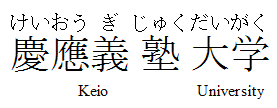
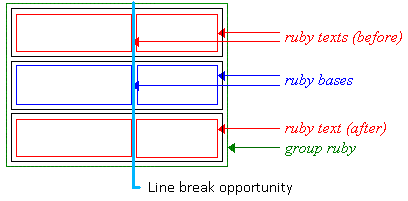
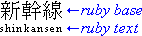
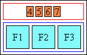
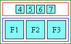
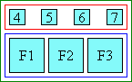
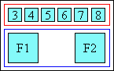
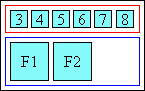
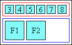

“Ruby” are short runs of text alongside the base text, typically used in East Asian documents to indicate pronunciation or to provide a short annotation. This module describes the rendering model and formatting controls related to displaying ruby annotations in CSS. CSS is a language for describing the rendering of structured documents (such as HTML and XML) on screen, on paper, in speech, etc.
The following features are at risk: …
This section is not normative.
This module extends the inline box model of CSS Level 2 [[!CSS21]] to support ruby.
None of the properties in this module apply to the ::first-line or
::first-letter pseudo-elements.
This specification follows the CSS property definition conventions from [[!CSS21]]. Value types not defined in this specification are defined in CSS Level 2 Revision 1 [[!CSS21]]. Other CSS modules may expand the definitions of these value types: for example [[CSS3VAL]], when combined with this module, expands the definition of the <length> value type as used in this specification.
In addition to the property-specific values listed in their definitions, all properties defined in this specification also accept the inherit keyword as their property value. For readability it has not been repeated explicitly.
Many typographical conventions in East Asian typography depend on whether the character rendered is wide (CJK) or narrow (non-CJK). There are a number of illustrations in this document for which the following legend is used:
The orientation which the above symbols assume in the diagrams corresponds to the orientation that the glyphs they represent are intended to assume when rendered by the user agent. Spacing between these characters in the diagrams is incidental, unless intentionally changed to make a point.
Ruby is the commonly-used name for a run of text that appears alongside another run of text (referred to as the “base”) and serves as an annotation or a pronunciation guide associated with that run of text.
The following figures show two examples of Ruby, a simple case and one with more complicated structure.
In this first example, a single annotation is used to annotate the base text.

Example of ruby used in Japanese (simple case)
In Japanese typography, this case is sometimes called taigo ruby or group-ruby (per-word ruby), because the annotation as a whole is associated with multi-character word (as a whole).
In this second example, two levels of annotations are attached to a base sequence: the hiragana characters on top refer to the pronunciation of each of the base kanji characters, while the words “Keio” and “University” on the bottom are annotations describing the English translation.

Complex ruby with annotation text over and under the base characters
Notice that to allow correct association between the hiragana characters and their corresponding Kanji base characters, the spacing between these Kanji characters is adjusted. (This happens around the fourth Kanji character in the figure above.) To avoid variable spacing between the Kanji characters in the example above the hiragana annotations can be styled as a collapsed annotation, which will look more like the group-ruby example earlier. However because the base-annotation pairings are recorded in the ruby structure, if the text breaks across lines, the annotation characters will stay correctly paired with their respective base characters.
Ruby formatting as used in Japanese is described in JIS X-4051 [[JIS4051]] (in Japanese) and in Requirements for Japanese Text Layout [[JLREQ]] (in English and Japanese)]. In HTML, ruby structure and markup to represent it is described in the Ruby Markup Extension specification. This module describes the CSS rendering model and formatting controls relevant to ruby layout of such markup.
The CSS ruby model is based on the HTML Ruby Markup Extension and XHTML Ruby Annotation Recommendation [[RUBY]]. In this model, a ruby structure consists of one or more ruby base elements representing the base (annotated) text, associated with one or more levels of ruby annotation elements representing the annotations. The structure of ruby is similar to that of a table: there are “rows” (the base text level, each annotation level) and “columns” (each ruby base and its corresponding ruby annotations).
Consecutive bases and annotations are grouped together into ruby segments. Within a ruby segment, a ruby annotation may span multiple ruby bases.
In HTML, a single <ruby> element may contain multiple ruby segments.
(In the XHTML Ruby model, a single <ruby> element can only contain one ruby segment.)
For document languages (such as XML applications) that do not have pre-defined ruby elements, authors must map document language elements to ruby elements; this is done with the 'display' property.
| Name: | display |
|---|---|
| New Values: | ruby | ruby-base | ruby-text | ruby-base-container | ruby-text-container |
The following new 'display' values assign ruby layout roles to an arbitrary element:
<ruby> elements.)
<rb> elements.)
<rt> elements.)
<rbc> elements; always implied in HTML.)
<ruby> elements.)
The CSS model does not require that the document language include elements that correspond to each of these components. Missing parts of the structure are implied through the anonymous box generation rules similar to those used to normalize tables. [[!CSS21]]
At this point, all ruby layout structures are properly parented, and the UA can start to associate bases with their annotations.
Note that the UA is not required to create any of these anonymous boxes in its internal structures, as long as pairing and layout behaves as if they existed.
Within a ruby structure, each ruby bases are associated with ruby annotations and vice versa. A ruby base can be associated with at most one ruby annotation per annotation level. If there are multiple annotation levels, it can therefore be associated with multiple ruby annotations. A ruby annotation is associated with one or more ruby bases; annotations can span multiple bases.
Annotation pairing is the process of associating ruby annotations with ruby bases.
First, the ruby structure is divided into ruby segments, each consisting of a single ruby base container followed by one or more ruby annotation containers. If the first child of a ruby container is a ruby annotation container, an anonymous, empty ruby base container is assumed to exist before it. Similarly, if the ruby container contains consecutive ruby base containers, anonymous, empty ruby annotation containers are assumed to exist between them. The ruby base container in each segment is thus associated with each of the ruby annotation containers in that segment.
Each ruby annotation containers in a ruby segment represents one level of annotation: the first one represents the first level of annotation, the second one represents the second level of annotation, and so on.
If an implementation supports ruby markup with explicit spanning (e.g. XHTML Complex Ruby Annotations), it must adjust the pairing rules to pair spanning annotations to multiple bases appropriately.
A this point, ruby “columns” are defined, each represented by a single ruby base and associated with one ruby annotation (possibly an empty, anonymous one) from each annotation level.
When ruby containers are nested, pairing begins with the deepest ruby container, then expands out, treating each ruby container nested within another ruby container as a ruby base, and associating each ruby annotation associated with the nested ruby container as being associated with (spanning) all of its ruby bases.
Using nested ruby containers thus allows the representation of complex spanning relationships.
This shouldn't belong in Level 1. But HTML5 allows it, so we have to handle it. Yay HTML5.
If a ruby annotation has the exact same content as its base, it is hidden. Hiding a ruby annotation does not affect annotation pairing or the block-axis positioning of boxes in other levels. However the hidden annotation is not visible, and it has no impact on layout other than to separate adjacent sequences of ruby annotation boxes within its level, as if they belonged to separate segments and the hidden annotation’s base were not a ruby base but an intervening inline.
This is to allow correct inlined display of annotations for Japanese words that are a mix of kanji and hirangana. For example, the word 振り仮名 should be inlined as
振り仮名(ふりがな)
and therefore marked up as
<ruby> <rb>振</rb><rb>り</rb><rb>仮</rb><rb>名</rb> <rp>(</rp><rt>ふ</rt><rt>り</rt><rt>が</rt><rt>な</rt><rp>)</rp> <ruby>
However, when displayed as ruby, the “り” should be hidden

Hiragana ruby for 振り仮名
Future levels of CSS Ruby may add controls for this, however in this level it is always forced.
The content comparison for this auto-hiding behavior
takes place prior to white space collapsing.
Is this easier? Or after collapsing is easier? We should do whatever is easier, as it really doesn't matter much which way to go.
I'm unsure exactly where space should be trimmed. :/
But pretty sure we need to keep spaces between things,
otherwise ruby only works for CJK.
Collapsible white space within a ruby structure is discarded
at the beginning and end of a ruby container,
and at the beginning/end of a ruby annotation box or ruby base box if white space is not its only contents.
Between ruby segments, between ruby bases, and between ruby annotations, however,
white space is not discarded.
If such white space is collapsible, it will collapse
following the standard white space processing rules. [[!CSS3-TEXT]]
Between ruby segments, however,
the contextual text for determining collapsing behavior is given by the ruby bases on either side,
not the text on either side of the white space in the source document.
Note that the white space processing rules
cause a white space sequence containing a segment break (such as a line feed)
to collapse to nothing between CJK characters.
This means that CJK ruby can safely use white space for indentation of the ruby markup.
For example, the following markup will display without any spaces:
However, this markup will:
Any preserved white space is then wrapped in an anonymous box belonging to
the ruby base container (if between ruby bases),
ruby annotation container (if between ruby annotations),
or ruby container (if between ruby segments).
In the latter case, the text is considered part of the base level.
This box does not take part in pairing.
It merely ensures separation between adjacent bases/annotations.
These rules allow ruby to be used with space-separated scripts such as Latin.
For example,
They also ensure that annotated white space is preserved. For example,
Specify how this impacts layout, or not.
When there is not enough space for an entire ruby container to fit on the line,
the ruby may be broken wherever all levels allow a break.
In typical cases, line breaks are forbidden within each ruby base and ruby annotation,
so the ruby container can only break between adjacent ruby bases,
and only if no ruby annotations span those ruby bases.
Whenever ruby breaks across lines, ruby annotations
must stay with their respective bases.

Ruby line breaking opportunity
Whether ruby can break between two adjacent ruby bases
is controlled by normal line-breaking rules for the affected text,
exactly as if the ruby bases were regular inline boxes.
For example, if two adjacent ruby bases are “蝴” and “蝶”,
the line may break between them,
because lines are normally allowed to break between two Han characters.
However, if 'word-break' is ''keep-all'', that line break is forbidden.
Inter-base white space is significant for evaluating line break opportunities between ruby bases.
As with white space between inlines, it collapses when the line breaks there.
For example, given the following markup:
Due to the space, the line may break between “one” and “two“.
If the line breaks there, that space disappears,
in accordance with standard CSS white space processing rules. [[CSS3-TEXT]]
The line must not break between a ruby base and its annotations.
''inter-character'' ruby line breaking opportunity
The 'line-height' property controls spacing between lines in CSS.
When inline content on line is shorter than the 'line-height',
half-leading is added on either side of the content,
as specificed in CSS2.1§10.8. [[!CSS21]]
In order to ensure consistent spacing of lines,
documents with ruby typically ensure that the 'line-height' is large enough
to accommodate ruby between lines of text.
Therefore, ordinarily, ruby annotation containers and ruby annotation boxes
do not contribute to the measured height of a line's inline contents;
any alignment (see 'vertical-align') and line-height calculations
are performed using only the ruby base container,
exactly as if it were a normal inline.
However, if the 'line-height' specified on the ruby container
is less than the distance between
the top of the top ruby annotation container
and the bottom of the bottom ruby annotation container,
then additional leading is added
on the appropriate side of the ruby base container
such that if a block consisted of three lines
each containing ruby identical to this,
none of the ruby containers would overlap.
Note that this does not ensure that the ruby annotations remain within the line box.
It merely ensures that if all lines had equal spacing
and equivalent amounts and positioning of ruby annotations,
there would be enough room to avoid overlap.
Authors should ensure appropriate 'line-height' and 'padding' to accommodate ruby,
and be particularly careful at the beginning or end of a block
and when a line contains inline-level content
(such as images, inline blocks, or elements shifted with 'vertical-align')
taller than the paragraph's default font size.
Ruby annotations will often overflow the line;
authors should ensure content over/under a ruby-annotated line
is adequately spaced to leave room for the ruby.
More control over how ruby affects alignment and line layout
will be part of the CSS Line Layout Module Level 3.
Note, it is currently in the process of being rewritten;
the current drafts should not be relied upon.
The following properties are introduced to control ruby positioning and alignment.
This property controls position of the ruby text with respect to its base.
Values have the following meanings:
Issue-107: Roland Steiner has requested the addition of an auto value as default. See this thread and this one. Ruby over Japanese base text in horizontal layout
Ruby to the right of Japanese base text in vertical layout

Ruby under Japanese base text in horizontal layout
Ruby to the left of Japanese base text in vertical layout
The ruby text appears on the right of the base in horizontal text.
This value forces the 'writing-mode' of the ruby annotation to be vertical.
This value is provided for the special case of traditional Chinese
as used especially in Taiwan:
ruby (made of bopomofo glyphs) in that context
appears vertically along the right side of the base glyph,
even when the layout of the base characters is horizontal:
“Bopomofo” ruby in traditional Chinese
(ruby text shown in blue for clarity) in horizontal layout
Note that the user agent is responsible for ensuring the correct relative alignment and positioning of the glyphs,
including those corresponding to the tone marks, when displaying.
Tone marks are spacing characters that occur (in memory) at the end of the ruby text for each base character.
They are usually displayed in a separate column to the right of the bopomofo characters,
and the height of the tone mark depends on the number of characters in the syllable.
One tone mark, however, is placed above the bopomofo, not to the right of it.
If multiple ruby annotation containers have the same 'ruby-position',
they stack along the block axis,
with lower levels of annotation closer to the base text.
This property controls how ruby annotation boxes should be rendered
when there are more than one in a ruby container box.
Possible values:
Each ruby annotation box is rendered in the same column(s) as its corresponding base box(es).
This style is called “mono ruby” in [[JLREQ]].
For example, the following two markups render the same:
and:
All ruby annotation boxes within the same ruby segment on the same line are concatenated,
and laid out as if their contents belonged to a single ruby annotation box
spanning all their associated ruby base boxes.
This style renders similar to “group ruby” in [[JLREQ]],
except that ruby annotations are kept together with their respective ruby bases when breaking lines.
The following two markups render the same both characters fit on one line:
and:
However, the second one renders the same as ''ruby-position: separate''
when the two bases are split across lines.
The user agent may use any algorithm to determine how each ruby annotation box
is rendered to its corresponding base box.
One possible algorithm is described as Jukugo-ruby in [[JLREQ]].
Another, more simplified algorithm of Jukugo-ruby is
to render as Mono-ruby if all ruby annotation boxes fit within
advances of their corresponding base boxes,
and render as Group-ruby otherwise.
This property specifies how text is distributed within the various ruby boxes
when their text contents exactly fill their respective boxes.
Values have the following meanings:
Issue: Tony Graham has suggested that distribute-letter and distribute-space be values of a ruby-group-distribution property, and line-edge be moved to a ruby-alignment-edge property, and that the rest be gathered under a ruby-alignment property. And that ruby-align become a shorthand. The user agent determines how the ruby contents are aligned.
This is the initial value.
The behavior recommended by [[JLREQ]] is for wide-cell ruby to be aligned in the 'distribute-space' mode:
Figure 4.2.1: Wide-cell text in 'auto' ruby alignment is
'distribute-space' justified The recommended behavior for narrow-cell glyph ruby is to be
aligned in the 'center' mode.  Figure 4.2.2: Narrow-width ruby text in 'auto' ruby alignment
is centered Figure 4.2.3: Start ruby alignment  Figure 4.2.4: Center ruby alignment  Figure 4.2.6: Distribute-letter ruby alignment Figure 4.2.7: Distribute-space ruby alignment For a complex ruby with spanning elements, one additional consideration is
required. If the spanning element spans multiple 'rows' (other rbc or rtc
elements), and the ruby alignment requires space distribution among the
'spanned' elements, a ratio must be determined among the 'columns' of spanned
elements. This ratio is computed by taking into consideration the widest
element within each column.
When ruby annotation box is longer than its corresponding ruby base box,
the ruby annotation box may partially overhang adjacent boxes.
This level of the specification does not define
how much the overhang may be allowed, and under what conditions.
If the ruby text is not allowed to overhang,
then the ruby behaves like a traditional inline box,
i.e. only its own contents are rendered within its boundaries
and adjacent elements do not cross the box boundary:
Simple ruby whose text is not allowed to overhang adjacent text
However, if ruby annotation content is allowed to overhang adjacent elements
and it happens to be wider than its base,
then the adjacent content is partially rendered within the area of the ruby container box,
while the ruby annotation may partially overlap the upper blank parts of the adjacent content:
Simple ruby whose text is allowed to overhang adjacent text
The ruby annotations related to a ruby base
must never overhang another ruby base.
The alignment of the contents of the base or the ruby text
is not affected by overhanging behavior.
The alignment is achieved the same way regardless of the overhang behavior setting
and it is computed before the space available for overlap is determined.
It is controlled by the 'ruby-align' property.
This entire logic applies the same way in vertical ideographic layout,
only the dimension in which it works in such a layout is vertical,
instead of horizontal.
The user agent may use [[JIS4051]] recommendation of
using one ruby text character length as the maximum overhang length.
Detailed rules for how ruby text can overhang adjacent characters for Japanese are described by [[JLREQ]].
When a ruby annotation box that is longer than its ruby base
is at the start or end edge of a line,
the user agent may force the side of the ruby annotation that touches the edge of the line
to align to the corresponding edge of the base.
This type of alignment is described by [[JLREQ]].
This level of the specification does not provide a mechanism to control this behavior.
Line-edge alignment
This section is informative.
The following represents a default UA style sheet
for rendering HTML and XHTML ruby markup as ruby layout:
Additional rules for UAs supporting the relevant features of [[CSS3-TEXT-DECOR]] and [[CSS3-FONTS]]:
Authors should not use the above rules;
a UA that supports ruby layout should provide these by default.
The following represents a sample style sheet
for rendering HTML and XHTML ruby markup as inline annotations:
Unfortunately, because Selectors cannot match against text nodes,
it's not possible with CSS to express rules that will automatically and correctly
add parentheses to unparenthesized ruby annotations in HTML.
(This is because HTML ruby allows implying the ruby base from raw text, without a corresponding element.)
However, these rules will handle cases where either Conformance requirements are expressed with a combination of
descriptive assertions and RFC 2119 terminology. The key words “MUST”,
“MUST NOT”, “REQUIRED”, “SHALL”, “SHALL NOT”, “SHOULD”, “SHOULD NOT”,
“RECOMMENDED”, “MAY”, and “OPTIONAL” in the normative parts of this
document are to be interpreted as described in RFC 2119.
However, for readability, these words do not appear in all uppercase
letters in this specification.
All of the text of this specification is normative except sections
explicitly marked as non-normative, examples, and notes. [[!RFC2119]] Examples in this specification are introduced with the words “for example”
or are set apart from the normative text with This is an example of an informative example. Informative notes begin with the word “Note” and are set apart from the
normative text with Note, this is an informative note. Conformance to CSS Ruby Module
is defined for three conformance classes:
A style sheet is conformant to CSS Ruby Module
if all of its statements that use syntax defined in this module are valid
according to the generic CSS grammar and the individual grammars of each
feature defined in this module.
A renderer is conformant to CSS Ruby Module
if, in addition to interpreting the style sheet as defined by the
appropriate specifications, it supports all the features defined
by CSS Ruby Module by parsing them correctly
and rendering the document accordingly. However, the inability of a
UA to correctly render a document due to limitations of the device
does not make the UA non-conformant. (For example, a UA is not
required to render color on a monochrome monitor.)
An authoring tool is conformant to CSS Ruby Module
if it writes style sheets that are syntactically correct according to the
generic CSS grammar and the individual grammars of each feature in
this module, and meet all other conformance requirements of style sheets
as described in this module.
So that authors can exploit the forward-compatible parsing rules to
assign fallback values, CSS renderers must
treat as invalid (and ignore
as appropriate) any at-rules, properties, property values, keywords,
and other syntactic constructs for which they have no usable level of
support. In particular, user agents must not selectively
ignore unsupported component values and honor supported values in a single
multi-value property declaration: if any value is considered invalid
(as unsupported values must be), CSS requires that the entire declaration
be ignored. To avoid clashes with future CSS features, the CSS2.1 specification
reserves a prefixed
syntax for proprietary and experimental extensions to CSS.
Prior to a specification reaching the Candidate Recommendation stage
in the W3C process, all implementations of a CSS feature are considered
experimental. The CSS Working Group recommends that implementations
use a vendor-prefixed syntax for such features, including those in
W3C Working Drafts. This avoids incompatibilities with future changes
in the draft.
Once a specification reaches the Candidate Recommendation stage,
non-experimental implementations are possible, and implementors should
release an unprefixed implementation of any CR-level feature they
can demonstrate to be correctly implemented according to spec.
To establish and maintain the interoperability of CSS across
implementations, the CSS Working Group requests that non-experimental
CSS renderers submit an implementation report (and, if necessary, the
testcases used for that implementation report) to the W3C before
releasing an unprefixed implementation of any CSS features. Testcases
submitted to W3C are subject to review and correction by the CSS
Working Group.
Further information on submitting testcases and implementation reports
can be found from on the CSS Working Group's website at
http://www.w3.org/Style/CSS/Test/.
Questions should be directed to the
public-css-testsuite@w3.org
mailing list.
This specification would not have been possible without the help from: Stephen Deach, Martin Dürst, Hideki Hiura(樋浦 秀樹), Masayasu Ishikawa(石川
雅康), Chris
Pratley, Takao Suzuki(鈴木 孝雄), Frank Yung-Fong Tang, Chris Thrasher, Masafumi Yabe家辺
勝文), Steve Zilles. The following major changes have been made since the previous Working Draft:
White Space
<ruby>
<rb>東</rb><rb>京</rb>
<rt>とう</rt><rt>きょう</rt>
</ruby>
<ruby>
<rb>東</rb> <rb>京</rb>
<rt>とう</rt> <rt>きょう</rt>
</ruby>
<ruby>
<rb>W</rb><rb>W</rb><rb>W</rb>
<rt>World</rt> <rt>Wide</rt> <rt>Web</rt>
</ruby>
<ruby>
<rb>Aerith</rb><rb> </rb><rb>Gainsboro</rb>
<rt>エアリス</rt><rt>・</rt><rt>ゲインズブール</rt>
</ruby>
Ruby box and line breaking
<ruby><rb>one</rb> <rb>two</rb> <rt>1</rt> <rt>2</rt></ruby>

Ruby box and line stacking

Ruby Properties
Ruby positioning: the 'ruby-position' property
Name:
ruby-position
Value:
[ over | under | inter-character ] && [ right | left ]
Initial:
over right
Applies to:
ruby annotation containers
Inherited:
yes
Percentages:
N/A
Media:
visual
Computed value:
specified value
Animatable:
no
Canonical order:
per grammar


Collapsed Ruby Annotations: the 'ruby-merge' property
Name:
ruby-merge
Value:
separate | collapse | auto
Initial:
separate
Applies to:
ruby annotation containers
Inherited:
yes
Percentages:
N/A
Media:
visual
Computed value:
specified value
Animatable:
no
Canonical order:
per grammar
<ruby>無<rt>む</ruby><ruby>常<rt>じょう</ruby>
<ruby style="ruby-merge:separate"><rb>無<rb>常<rt>む<rt>じょう</ruby>
<ruby>無常<rt>むじょう</ruby>
<ruby style="ruby-merge:collapse"><rb>無<rb>常<rt>む<rt>じょう</ruby>
Ruby Text Distribution: the 'ruby-align' property
Name:
ruby-align
Value:
auto | start | center |
distribute-letter | distribute-space
Initial:
auto
Applies to:
ruby bases, ruby annotations, ruby base containers, ruby annotation containers
Inherited:
yes
Percentages:
N/A
Media:
visual
Computed value:
specified value (except for initial and inherit)


 


Edge Effects
Overhanging Ruby


Line-edge Alignment

Appendix A: Default Style Sheet
A.1 Supporting Ruby Layout
ruby { display: ruby; }
rb { display: ruby-base; white-space: nowrap; }
rt { display: ruby-text; white-space: nowrap; font-size: 50%; }
rbc { display: ruby-base-container; }
rtc { display: ruby-text-container; }
rt { font-variant-east-asian: ruby; text-emphasis: none; }
A.2 Inlining Ruby Annotations
ruby, rb, rt, rbc, rtc, rp {
display: inline; white-space: inherit;
font-variant-east-asian: inherit; text-emphasis: inherit; }
A.3 Generating Parentheses
<rb>
or <rtc> is used rigorously.
/* Parens around <rtc> */
rtc::before { content: "("; }
rtc::after { content: ")"; }
/* Parens before first <rt> not inside <rtc> */
rb + rt::before,
rtc + rt::before { content: "("; }
/* Parens after <rt> not inside <rtc> */
rb ~ rt:last-child::after,
rt + rb::before { content: ")"; }
rt + rtc::before { content: ")("; }
Glossary
Conformance
Document conventions
class="example",
like this:
class="note", like this:
Conformance classes
Partial implementations
Experimental implementations
Non-experimental implementations
Acknowledgments
Changes
rbspan.
References
Normative references
Other references
Index
Property index